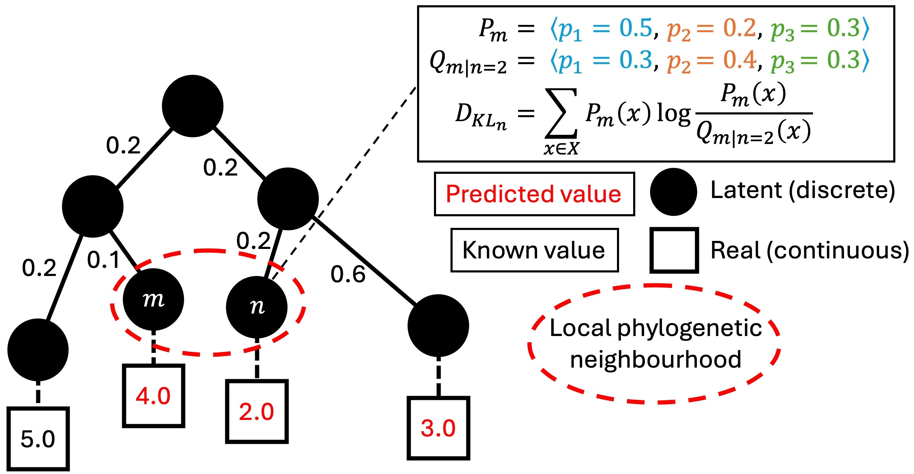

Treegazer
Table of Contents
- Quick Setup — Download & Run
- Building from Source — Maven
- Model Background
- Command-Line Reference
- Examples
Quick Setup — Download & Run
- Install Java 11+. Any OS works — macOS, Windows, Linux.
- Download the jar from the bnkit releases page.
- Sanity-check it:
console
java -jar TreeGazer.jar -h
You should see the full help text print to the console.
Building from Source — Maven
-
Clone bnkit in full. (JUnit 5 is only needed if you're a developer running the test suite.)
-
Confirm Maven is installed:
console
mvn -h
If that fails, install it from maven.apache.org, or via a package manager (apt on Ubuntu/Debian, brew on macOS).
- From the repo root, compile the code, make sure you use the
poms/pom.xmlfile:
console
mvn compile -f poms/pom.xml
- Build the jar, using the
poms/pomTreeGazer.xmlfile:
console
mvn package -f poms/pomTreeGazer.xml -DskipTests
-DskipTests skips the test suite — fine unless you're developing. The jar lands in target/TreeGazer-<version>.jar.
Model Background
TreeGazer annotates ancestor (internal) and extant (leaf) nodes in a phylogenetic tree, using a subset of nodes whose properties are already known. Properties can be discrete or continuous.
| Continuous variables | Modelled with latent discrete variables that mix Gaussian distributions over the observable values. Mixture parameters are learned via expectation maximisation (EM) and shared across all nodes in the tree; node states are governed by an evolutionary model. |
| Discrete variables | Latent variables are optional — TreeGazer can map observed values directly onto the tree with direct mode, no internal latent states required. |
 Figure 1 — Discrete latent nodes (circles) mimic the phylogenetic tree's structure, while continuous, real nodes (squares) hold known values for a property (e.g. a kinetic parameter). Any number of latent states can be specified; each maps to a Gaussian distribution learned from the data.
Figure 1 — Discrete latent nodes (circles) mimic the phylogenetic tree's structure, while continuous, real nodes (squares) hold known values for a property (e.g. a kinetic parameter). Any number of latent states can be specified; each maps to a Gaussian distribution learned from the data.
Modes at a glance
| Mode | Outcome | Input data type |
|---|---|---|
| Direct | Joint reconstruction | Discrete only |
| Direct | Marginal reconstruction | Discrete only |
| Latent | Learning | Discrete and real |
| Latent | Marginal reconstruction (learning required first) | Discrete and real |
| Latent | Joint reconstruction (learning required first) | Discrete and real |
Evolutionary model: Currently limited to a uniform model — an adaptation of Jukes-Cantor for an arbitrary number of states. Real-valued data is learned as a conditional Gaussian mixture; discrete data is learned as a conditional multinomial. Inference is joint by default, or marginal (optionally at a specific branch-point — otherwise all uninstantiated nodes are inferred).
Predicting information gain with marginal inference
It is possible to use TreeGazer to identify which nodes are most informative about others within a local phylogenetic neighbourhood. This is done by calculating the Kullback–Leibler (KL) metric for each node, which measures the information gain at neighbouring nodes when a prediction is made at that node.
Currently, this feature is only supported for leaf nodes, and only for continuous data.
Figure 2 demonstrates the calculation of the Kullback–Leibler (KL) metric for a node, $n$. We first identify all uninstantiated nodes within one evolutionary distance, indicated by the red dashed circle. The initial marginal distribution for the neighbouring node $m$ is calculated and represented by $P(X)$. The prediction for node $n$ is then added to evidence and the marginal distribution for $m$ is recalculated as $Q_m$. The total KL metric is simply the sum of all neighbouring nodes. Since this toy example contains only one neighbouring node, the total metric reduces to $D_{KL_m}$.

Figure 2 — Measuring the local sensitivity of a phylogenetic Bayesian network to predictions.Command-Line Reference
Required
| Flag | Description |
|---|---|
-nwk <tree-file> |
Phylogenetic tree, Newick format |
-in {<label>@}<input-file> |
TSV file: node/sequence names in column 1, values in other columns. Blank / None / null means "not assigned". Prefix with <label>@ to pick which column to model — otherwise the second column is used |
-out <output-file> |
Prefix for the output file; extension/type set by -format |
Optional flags
| Flag | Description |
|---|---|
-params <JSON-file> |
Path to save (learning) or load (inference) the learned model parameters |
-latent <#states> |
Number of latent states to use. Max 25 — states are labelled A–Z |
-internal |
Also model internal nodes (default is leaves-only) |
-learn |
Run EM learning instead of inference, using the input data as training data |
-untied |
Learn variance separately per latent state, rather than tied/shared (only for EM-learned GDTs; tied is default) |
-seed <seed> |
Random seed |
-joint (default) / -marg {<branchpoint-id>} |
Joint inference, or marginal (optionally at one branch-point) |
-format <TSV\|TREE\|STDOUT\|ITOL> |
Output format — TSV by default |
-cmin <value> / -cmax <value> |
Min/max for the iTOL colour scale — latent + real-valued mode only. Defaults to the min/max of the input values |
-help / -h |
Print help |
-verbose / -v |
Print progress messages while running |
Output formats
| Format | Contains |
|---|---|
TSV (default) |
Both inferred and known node values |
TREE |
Labelled tree, Newick format |
STDOUT |
Printed to console |
ITOL |
Dataset to decorate a tree at iTOL.embl.de |
Full usage synopsis
Usage: asr.TreeGazer
[-nwk <tree-file> -in {<label>@}<input-file> -out <output-file>]
{-params <JSON-file>}
{-latent <#states>}
{-internal}
{-learn}
{-untied}
{-seed <seed>}
{-joint (default) | -marg {<branchpoint-id>} }
{-format <TSV(default), TREE, STDOUT, ITOL>}
{-cmin <value (default: min of -in values)>}
{-cmax <value (default max of -in values)>}
{-help|-h}
{-verbose|-v}
Examples
Latent mode — learning
Before running any latent inference, the shared distribution must be learned first.
Input TSV — extant nodes labelled by accession ID; internal/ancestor nodes labelled as in GRASP (N0, N1, … depth-first). Node names go in column 1. Leave a cell blank or use null / None where no value is available:
Entry mean_retained_activity std_retained_activity Isobutanol_%
A0A2M7A7S6 0.3990116080000001 0.19623674311255804 8
N1 0.17249387866666666 0.038831346745923825 8
N227 0.4221575046666666 0.001622404 8
N28 0.8627858626666667 0.031306071743960474 8
N29 0.5615638736666667 0.008130065 8
N459 0.39025134166666664 0.013820733111537073 8
N608 0.10784281966666666 0.005627829 8
N615 0.6278029940000001 0.025805765715013116 8
N78 12.469763536666667 1.1619048626436186 8
N79 2.6974158083333335 0.051390714599450736 8
N82 2.074187615 0.2004342392387551 8
N95 0.3724682653333333 0.022329334151059477 8
A0A0K9HJH1 0.5610371706666667 0.029527957919090055 8
D3PT81 0.319143403 0.043889298 8
A0A1V4QSD8 1.3732522796666666 0.039652550084277975 8
Run learning:
java -jar treegazer.jar -nwk kari.nwk -params kari_demo.params -latent 3 \
-in demo.tsv -seed 42 -internal -learn -verbose
-latent 3invents three discrete states:mean_retained_activity_1,_2,_3kari.nwkmust use the same labels as the TSV-internalis required to learn from (and later annotate) internal nodes — without it, any internal-node annotations in the TSV are ignored
Modelling a specific column: by default the second TSV column is used; name a different one with <column>@<file>:
java -jar treegazer.jar -nwk kari.nwk -params kari_demo.params -latent 3 \
-in mean_retained_activity@demo.tsv -seed 42 -internal -learn -verbose
Verbose output prints the evolutionary model parameters for the latent variables: R is the instantaneous rate matrix for the 3-state model, F the stationary frequency of each latent state. TreeGazer assumes a uniform model — all latent states equally likely, all transitions between them equally likely:
"R" : [-0.66, 0.33, 0.33]
[ 0.33, -0.66, 0.33]
[ 0.33, 0.33, -0.66]
"F" : [ 0.33, 0.33, 0.33]
Once EM converges, parameters are written to the -params file:
{"Condition":[["mean_retained_activity_1"],["mean_retained_activity_2"],["mean_retained_activity_3"]],
"Pr":[[12.469763536666667,0.11150665525484037],[2.049876146158595,0.11150665525484037],[0.4366513910438917,0.11150665525484037]],
"Variable":{"Domain":{"Predef":"Real"},"Name":"0_Real"},"Nodetype":"GDT","TieVariance":2,"Index":[0,1,2]}
Pr holds the mean and variance of each latent state. Variance is pooled and shared (tied) across states by default — recommended especially for sparse data — and can be disabled with -untied.
Latent mode — marginal inference
With kari_demo.params learned, run inference:
java -jar treegazer.jar -out kari_demo -nwk kari.nwk -params kari_demo.params -latent 3 \
-in demo.tsv -seed 42 -internal -verbose -marg -out kari_demo_marg
Default output is a TSV with both known and inferred values:
Entry mean_retained_activity (Mean) mean_retained_activity (SD) mean_retained_activity (KL) mean_retained_activity (marginal) mean_retained_activity (BSV)
N0 0.293431578545634 0.07340834030679089 0.0 2.3489238872480037E-4;2.3489507100154052E-4;0.9995302125402736; 0.0013925313719196696
N1 0.17249387866666666
N2 0.3445732575732776 0.3282714039412337 0.0 0.020434353498567374;0.020434357595775318;0.9591312889056574; 0.11642601315501197
N3 0.4474292277588679 0.5623361193401997 0.0 0.054622058066518694;0.05462206171606096;0.8907558802174205; 0.29759397607094196
N4 0.5608174952028746 0.7250736809780182 0.0 0.0856382739531645;0.08563827719656965;0.8287234488502659; 0.44851434848338384
N5 0.6848013845798004 0.8463842384944851 0.0 0.1362126020229125;0.13621260460407997;0.7275747933730075; 0.6623723798958735
A0A0A7GET6 0.9220826617773531 0.9900263579231979 0.0 0.22839704477979955;0.2283970461538719;0.5432059090663285; 0.9580840288287659
N6 0.9167581628894823 0.9950341237275492 0.0 0.2270954894962467;0.227095490887362;0.5458090196163912; 0.954719722764416
N7 0.9791732141494087 1.0206093510686716 0.0 0.24557337068862806;0.24557337183778755;0.5088532574735843; 1.0000597860107487
A few notes on the output:
- Nodes with a known value will have that value in the mean column, all other columns will be blank (e.g. N1).
- Nodes without a known value: mean and standard deviation are computed by sampling the Gaussian mixture at that node.
As well as the actual prediction, the output includes: - KL — the Kullback–Leibler metric for that node, which measures how much information is gained at neighbouring nodes - marginal — the probability of each latent state at that node, separated by semicolons - BSV — Between-State Variance. For each Gaussian in the mixture, the squared deviation between that Gaussian's mean and the prediction is calculated and weighted by the marginal probability of that latent state. Summing these weighted squared deviations across all components yields the between-state variance, representing the portion of the total predictive variance attributable to uncertainty over which discrete state generated the observation.
Visualising in iTOL: add -format ITOL — squares represent training data, circles represent inferred values, and
circle size reflects prediction confidence as measured with standard deviation. The size of the circles are determined
by binning all the standard deviations into 3 equally sized bins, and scaling the circle size accordingly. A smaller
circle indicates a lower confidence prediction.
The colour scale
defaults to the min/max of the input data; override with -cmin / -cmax for comparability across datasets.

Latent mode — joint inference
Infer the single joint labelling of latent states that best explains the data, using -joint instead of -marg:
java -jar treegazer.jar -out kari_demo -nwk kari.nwk -params kari_demo.params -latent 3 \
-in demo.tsv -seed 42 -internal -verbose -joint -out kari_demo_joint
kari_demo_joint.tsv contains the most likely latent state per node — equivalently, the most likely Gaussian distribution at that node:
Entry mean_retained_activity
N0 mean_retained_activity_3
N2 mean_retained_activity_3
N3 mean_retained_activity_3
N4 mean_retained_activity_3
N5 mean_retained_activity_3
A0A0A7GET6 mean_retained_activity_3
N6 mean_retained_activity_3
N7 mean_retained_activity_3
A0A2A5QQ65 mean_retained_activity_3
Direct mode — joint inference
Direct mode has no latent states, so observed values map straight onto the tree — a single inference step, no learning phase.
Input TSV — discrete annotations of taxonomic superkingdom for a subset of nodes:
Entry PHYLUM SUPERKINGDOM
A5ILB0 Thermotogae Bacteria
P08144 Arthropoda Eukaryota
P29957 Proteobacteria Bacteria
H2N0D4 Chordata Eukaryota
T1WDH2 Ciliophora Eukaryota
T1WE96 Ciliophora Eukaryota
H9B4I9 Firmicutes Bacteria
A0A060DAC6 None None
Q47R94 Actinobacteria Bacteria
Infer the joint labelling of external and internal nodes that best explains the known labels:
java -jar treegazer.jar -out kari_demo -nwk kari.nwk -in superkingdom@demo.tsv -seed 42 -internal -verbose -out kari_taxa_joint -joint
Saved as an iTOL dataset (-format ITOL) — drop it into iTOL once the tree file is uploaded.

Direct mode — marginal inference
Also supported, but for discrete data only — use -marg instead of -joint:
java -jar treegazer.jar -out kari_demo -nwk kari.nwk -in superkingdom@demo.tsv -seed 42 -internal -verbose -out kari_taxa_marg -marg
Output gives the probability of each node being in each state:
Entry Eukaryota Bacteria
N0 0.5 0.5
N2 0.9693484697521487 0.030651530247851267
N3 0.9180669129002216 0.0819330870997784
N4 0.8715425890702533 0.12845741092974677
N5 0.7956810969656312 0.20431890303436887
A0A0A7GET6 0.6574044328303008 0.3425955671696993
N6 0.6593567657556293 0.3406432342443707
N7 0.631639943967058 0.368360056032942
A0A2A5QQ65 0.5573169561287165 0.4426830438712836
⚠️ No iTOL output for direct-mode marginal inference — the result is a multinomial distribution over observed states, not a single value, so it can't be rendered as a tree visualisation.